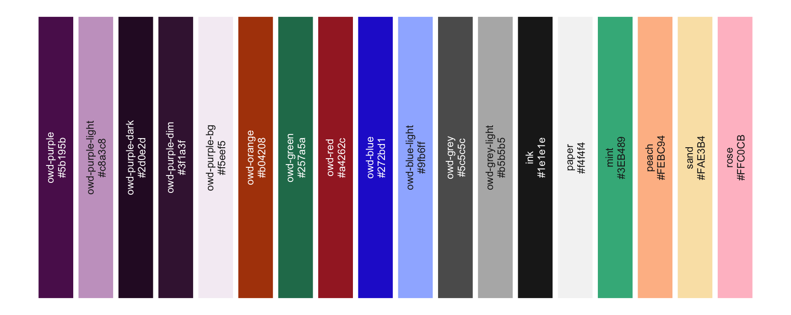
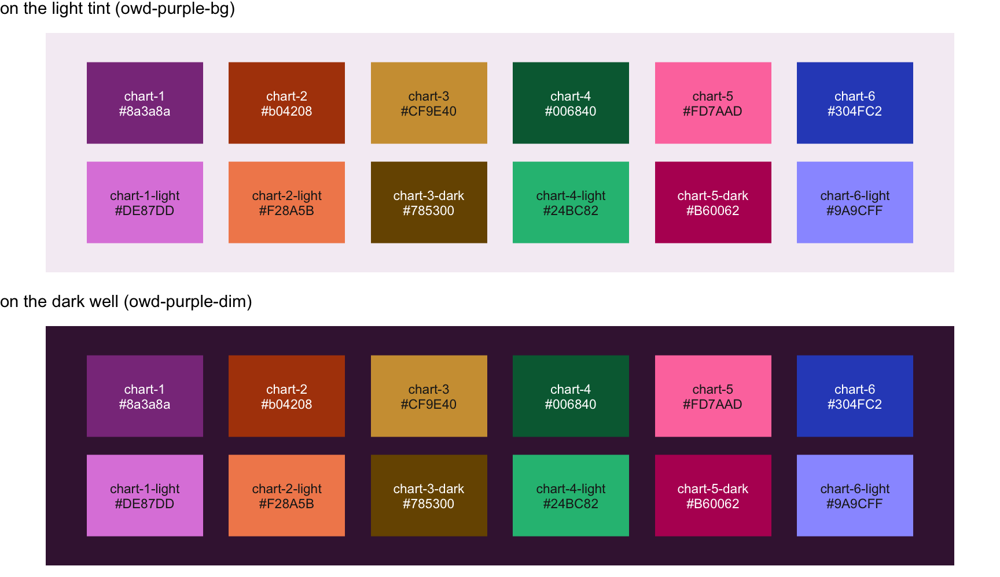
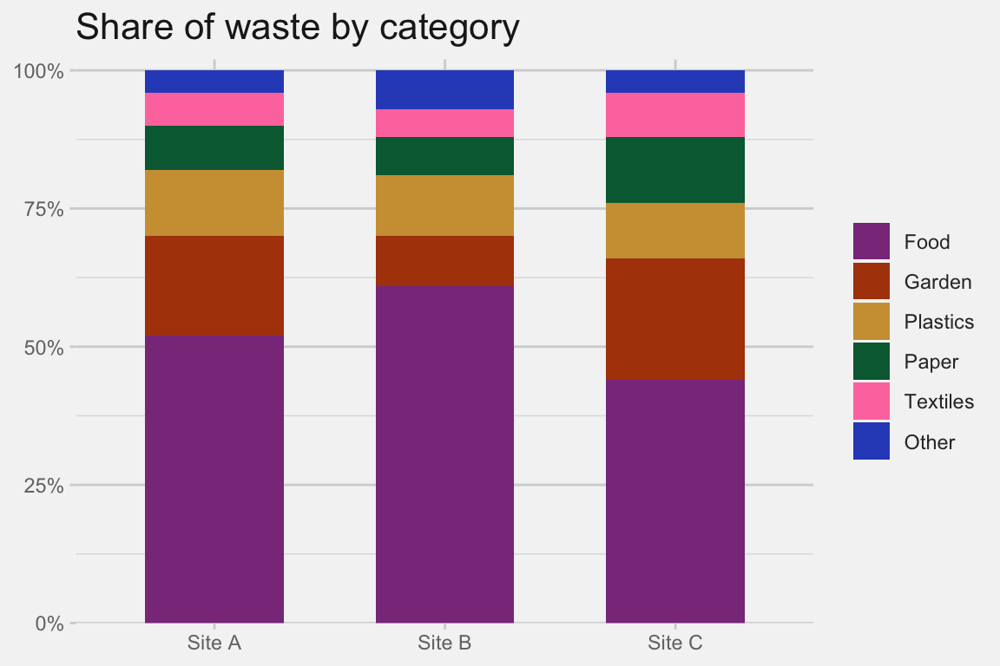
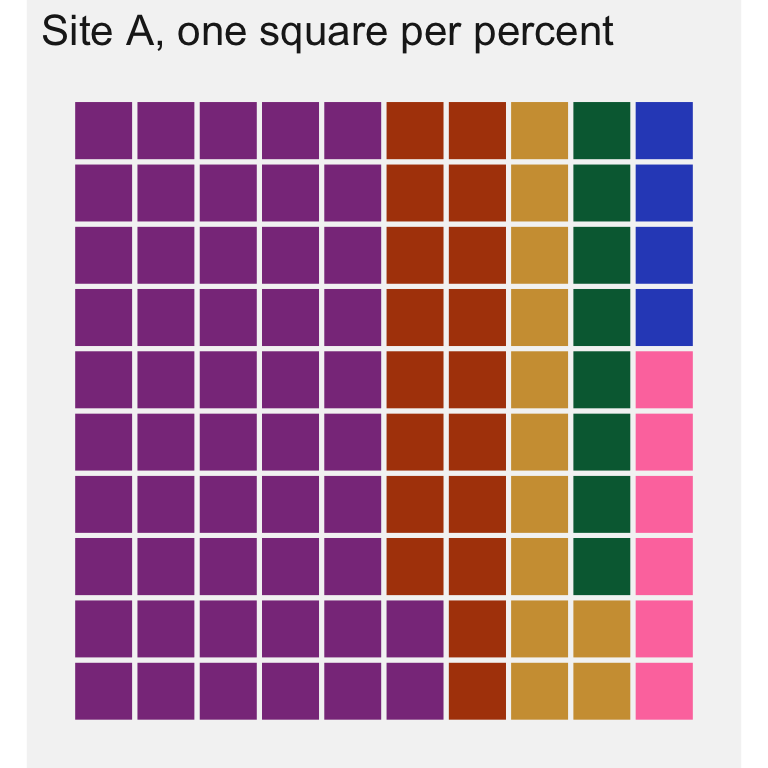
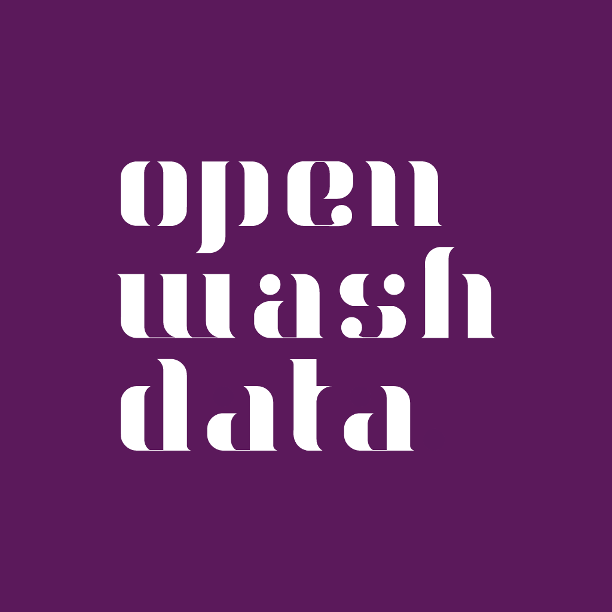
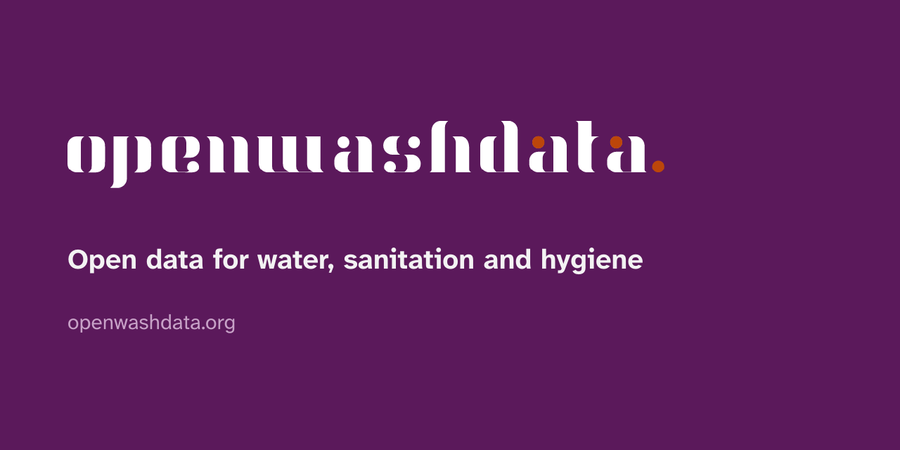

openwashdata brand
One file defines the look. This page shows what it looks like and how to use it.
This page renders with the brand files in this repository and nothing else: no custom SCSS, no manual colours. Everything on it, the swatches, the contrast table, the themed chart and table, is computed from _brand.yml at render time, so it cannot drift from the definition. Use the toggle in the navigation bar to see the dark brand.
Typography
Body text runs in Atkinson Hyperlegible Next, a typeface designed for legibility at small sizes and for readers with low vision. Headings use its bold weight in the primary colour. Here is a link in the brand blue, some bold text, some italic text, and inline code like read_csv("data.csv") in Source Code Pro on the light purple tint.
# Code blocks use Source Code Pro on the same tint.
library(washr)
setup_dictionary()A third-level heading
A block quote, for measuring how quoted material sits against the background.
The palette
Roles
Each role has a light and a dark value. Tools read the roles, not the palette names, so a role change reaches every consumer at once.
| Role | Light | Dark | Used for |
|---|---|---|---|
| foreground | ink | paper | text |
| background | paper | owd-purple-dark | page |
| primary | owd-purple | owd-purple-light | navbar, headings, buttons |
| secondary | owd-grey | owd-grey-light | muted text, disabled states |
| tertiary | owd-purple-bg | owd-purple-dim | wells, hover states, code background |
| success | owd-green | mint | tip callouts, positive states |
| info | owd-blue | owd-blue-light | links, note callouts, info states |
| warning | owd-orange | peach | warning and caution callouts |
| danger | owd-red | rose | important callouts, errors |
Pairings and contrast
Text needs a contrast of 4.5:1 against its background (WCAG AA), large text and interface elements 3:1. The table is computed from the file. The four highlight colours (mint, peach, sand, rose) are backgrounds only and take ink text; they are not for text.
| Text | Background | Contrast | WCAG |
|---|---|---|---|
| ink | paper | 15.16 | AAA |
| owd-purple | paper | 11.01 | AAA |
| owd-blue | paper | 8.12 | AAA |
| owd-orange | paper | 5.26 | AA |
| owd-green | paper | 4.76 | AA |
| owd-red | paper | 6.60 | AA |
| owd-grey | paper | 6.08 | AA |
| white | owd-purple | 12.10 | AAA |
| white | owd-blue | 8.93 | AAA |
| white | owd-orange | 5.79 | AA |
| white | owd-green | 5.24 | AA |
| white | owd-red | 7.26 | AAA |
| white | owd-grey | 6.69 | AA |
| ink | owd-purple-bg | 14.63 | AAA |
| ink | mint | 6.43 | AA |
| ink | peach | 10.19 | AAA |
| ink | sand | 13.27 | AAA |
| ink | rose | 10.84 | AAA |
| paper | owd-purple-dark | 15.75 | AAA |
| owd-purple-light | owd-purple-dark | 7.86 | AAA |
| owd-blue-light | owd-purple-dark | 8.75 | AAA |
| mint | owd-purple-dark | 6.68 | AA |
| peach | owd-purple-dark | 10.59 | AAA |
| rose | owd-purple-dark | 11.26 | AAA |
| owd-grey-light | owd-purple-dark | 8.45 | AAA |
Semantic roles in callouts
Note
A note, tinted from info on the web and from primary in Typst.
Tip
A tip, tinted from success (owd-green).
Warning
A warning, tinted from warning (owd-orange).
Caution
A caution, also from warning.
Important
An important callout, tinted from danger (owd-red).
Logos
The wordmark and the stacked mark exist for light and for dark backgrounds. _brand.yml designates three sizes with a light and a dark variant each; Quarto and bslib pick the right one for the mode.
Rules
- Which variant. Wordmark (01 to 12) beside text and in headers; stacked mark (13 to 34) where the space is square; badge (35 to 41) for avatars and favicons. Black or white artwork on coloured backgrounds; the coloured artwork (purple, light purple, orange) on white or paper only.
- Dark backgrounds. Use the white variants (04 to 06, 13 to 17) or a badge. Never place the black wordmark on owd-purple.
- Clear space. Keep at least the height of the lowercase letters free around the mark. Minimum width 120 px or 30 mm for the wordmark, 24 px for the stacked mark.
- No changes. Do not recolour, stretch, outline or add effects. The dot is part of the mark.
- Navbar note. A Quarto or pkgdown navbar in the primary colour needs the white stacked mark; set it explicitly (
navbar: logo: logos/OWD-logo-16.png) until the tools pick a logo by background. - Permission. The logos identify openwashdata. They are here so that openwashdata material renders with the right marks; any other use needs permission (see the LICENSE section of the README).
The full library sits in logos/: 41 variants as SVG and PNG, a large export of variant 20, and the QR code logos in logos/communications/.
Dark mode
The dark brand lives in _brand-dark.yml: the same palette and logos, dark values for the roles. A Quarto website toggles between the two:
brand:
light: _brand.yml
dark: _brand-dark.yml
format:
html:
theme:
light: brand
dark: brandTypst PDFs and revealjs slides render one mode; set brand-mode: dark for the dark one. The brand.yml R package that bslib and pkgdown use reads one mode per file, which is why the two brands stay in two files.
Charts and tables
The brand.yml R package themes ggplot2, gt, flextable, plotly and thematic from the file, so a chart in a data package README or a course slide carries the brand without manual colours. Series colours come from the six chart colours.
Chart colours
Six colours for categorical series, derived from the brand hues and checked on both surfaces for lightness, chroma, colour-vision separation and contrast. Series take them in this order and never cycle: a seventh series folds into “Other”, or the chart becomes small multiples. Two adjacent pairs (chart-2 next to chart-4, chart-4 next to chart-5) sit in the narrow band for colour-vision deficiency, so charts keep a gap between fills, direct labels on the values that matter, and a legend. Text on charts wears ink or grey, never a series colour.

Fills that reach 3:1 against the surface stand on their own; the others need labels or a table next to the chart. The table is computed from the file.
| Series colour | Surface | Contrast | Relief |
|---|---|---|---|
| chart-1 | owd-purple-bg | 6.04 | stands alone |
| chart-2 | owd-purple-bg | 5.08 | stands alone |
| chart-3 | owd-purple-bg | 4.97 | stands alone |
| chart-4 | owd-purple-bg | 3.79 | stands alone |
| chart-5 | owd-purple-bg | 2.86 | labels or a table |
| chart-6 | owd-purple-bg | 4.12 | stands alone |
| chart-1 | owd-purple-dim | 2.13 | labels or a table |
| chart-2 | owd-purple-dim | 2.54 | labels or a table |
| chart-3 | owd-purple-dim | 2.59 | labels or a table |
| chart-4 | owd-purple-dim | 3.40 | stands alone |
| chart-5 | owd-purple-dim | 4.51 | stands alone |
| chart-6 | owd-purple-dim | 3.13 | stands alone |
Status colours stay reserved: owd-green marks success and owd-red marks danger, and neither is a series colour. owd-orange is both the warning role and chart-2; the brand names it the chart accent, and the overlap is accepted.
Sequential and diverging
A sequential ramp uses one hue, from owd-purple-bg to owd-purple-dark. A diverging ramp runs from owd-orange through owd-grey-light to chart-3, interpolated in a perceptual colour space: the two poles share the same lightness, and lightness rises evenly to the neutral middle on both sides (OKLab lightness 0.53, 0.61, 0.69, 0.77 and back). On the dark well the middle is owd-grey.

Themed chart and table

| Neighbourhood | Median monthly cost (GHS) |
|---|---|
| Madina | 48.5 |
| Nima | 61.0 |
| Teshie | 39.2 |
The two calls are brand.yml::theme_brand_ggplot2() and brand.yml::theme_brand_gt(). In R the palette names carry underscores (brand$color$palette$chart_1). Series take chart-1 to chart-6 in that order; a sequential ramp interpolates from owd-purple-bg to owd-purple-dark; a diverging ramp from owd-orange through owd-grey-light to chart-3.
Assets
Ready to upload: a square avatar for GitHub, Buttondown and LinkedIn, and a social preview image for repositories and the website. Both are generated from the logo files with Typst (assets/*.typ).


Where each file is in use, so a regeneration knows what to upload again. The upload forms have no API; each is done by hand.
| File | In use | Where to upload |
|---|---|---|
assets/avatar.png |
GitHub organisation profile picture | Organisation settings, Profile |
assets/avatar.png |
Buttondown newsletter icon | Buttondown, Settings, General, Icon |
assets/social-preview.png |
Social preview of the repositories brand, washr, quarto-owd, website and newsletter | Each repository, Settings, General, Social preview |
assets/social-preview.png |
Buttondown share image | Buttondown, Settings, General, Share image |
logos/OWD-logo-40.png |
Header of the newsletter emails, linked from the v1.0.0 tag | Buttondown, Settings, Email, Header |
A LinkedIn page for openwashdata does not exist yet. Its cover slot is about six to one, so the social preview does not fit it; a cover would be a separate Typst asset.
How to use the brand
- Quarto website, document or slide deck:
quarto use brand openwashdata/brand(Quarto 1.9 and later), or copy_brand.ymlandlogos/into the project root. - Branded PDF and Word documents: the quarto-owd extension, formats
owd-typstandowd-docx. - R data packages:
washr::use_brand()copies the brand and wires the pkgdown site. - Shiny and other bslib apps:
bslib::bs_theme(brand = "_brand.yml"). - Charts and tables: the
theme_brand_*()functions above. - Everything else: read the YAML and take colours from
color$palette.
Values change in this repository first. Consumers refresh with the same commands; releases are tagged, so a consumer can pin a version (washr::use_brand(ref = "v1.0.0")).